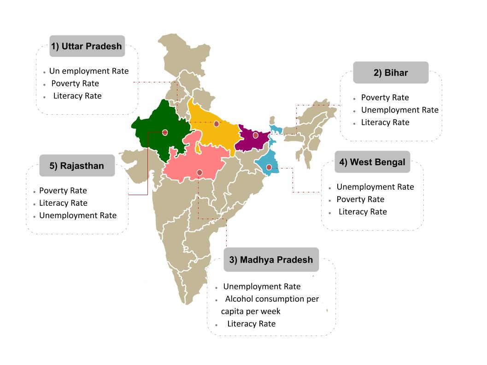

| MAP SHOWING HIGH DENSITY ZONES IN INDIA FOR DOWRY DEATHS CASES | LIST OF STATES ACCORDING TO DOWRY DEARTHS CASES REGISTERED IN 2016 | ||
|  | 1> UTTAR PRADESH 33.59 % | 2> BIHAR 13.40 % | 3> MADHYA PRADESH 8.54 % |
| 4> WEST BENGAL 7.27 % | 5> RAJASTHAN 6.27 % | 6> ODISHA 5.39 % | |
| 7> JHARKHAND 3.78 % | 8> HARYANA 3.53 % | 9> MAHARASHTRA 3.37 % | |
| 10> KARNATAKA 3.18 % | 11> ANDHRA PRADESH 2.62 % | 12> DELHI 2.20 % | |
| 13> ASSAM 2.13 % | 14> CHHATTISGARH 1.14 % | 15> PUNJAB 1.09 % | |
| 16> TAMIL NADU 0.79 % | 17> UTTARAKHAND 0.77 % | 18> KERALA 0.34 % | |
| 19> TRIPURA 0.26 % | 20> GUJARAT 0.16 % | 21> JAMMU & KASHMIR 0.08 % | |
| 22> HIMACHAL PRADESH 0.04 % | 23> GOA 0.03 % | 24> ARUNACHAL PRADESH 0.01 % | |
| 25> NAGALAND 0.01 % | 26> MANIPUR 0.00 % | 27> MEGHALAYA 0.00 % | |
| 28> MIZORAM 0.00 % | 29> SIKKIM 0.00 % | ||